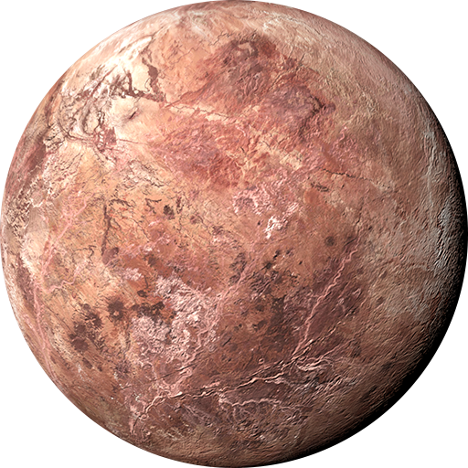

Dwarf planets are what you think they are. They are small rocky body’s
that orbit the sun in our solar system. There are 5 officially
recognised dwarf planets in the solar system.
Dwarf planets are the same as normal planets, just smaller. There are
other differences between planets and dwarf planets, with the main one
being that dwarf planets have not cleared other objects in the area
that they orbit.
The list of the 5 dwarfs are below. Starting from the closest one to
the sun and then outwards.
CERES

Ceres is the closest dwarf planet to the sun and lives in the
asteroid belt between Mars and Jupiter. Ceres is also the smallest
of the dwarf planets and is the only planet that is not in the
Kuiper belt. Ceres is a very rocky planet with mysterious spots
found on its surface.
PLUTO

Pluto is the 2nd closest dwarf planet to the sun and lives in
the Kuiper belt. Pluto was once a planet and was the 9th planet in
the solar system until it was found to be a dwarf planet instead.
Pluto is the largest of the dwarf planets and has 5 moons.
Haumea

Haumea is the 3rd closest dwarf planet to the sun and lives
in the Kuiper belt. Haumea is strangely oval in shape due to the
fast rotation its spins. Haumea also has two orbiting moons. So fast
is Haumea that it completely turns on its axis every 4 hours.
MakeMake

MakeMake is the 4th closest dwarf planet to the sun and lives
in the Kuiper belt. Makemake is also the 3rd largest dwarf planet in
the solar system. Makemake is red in color, has 1 moon, is a perfect
sphere and has no atmosphere.
ERIS

Eris is the 5th closest dwarf planet to the sun and lives in
the Kuiper belt. Which actually makes Eris the further dwarf planet
from the sun. Eris has 1 moon, and is in a strange orbit around the
sun. Eris at times in orbit around the sun leaves the Kuiper belt
altogether and then comes back in.